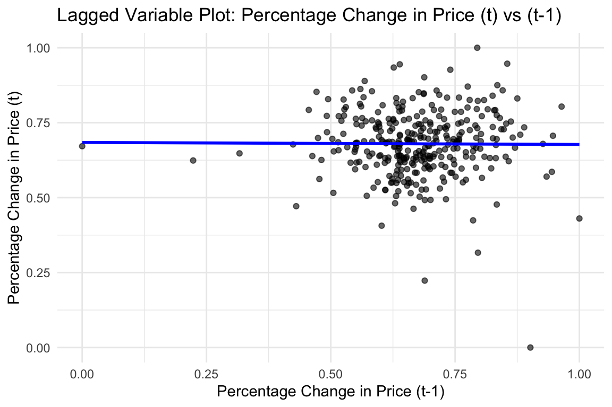
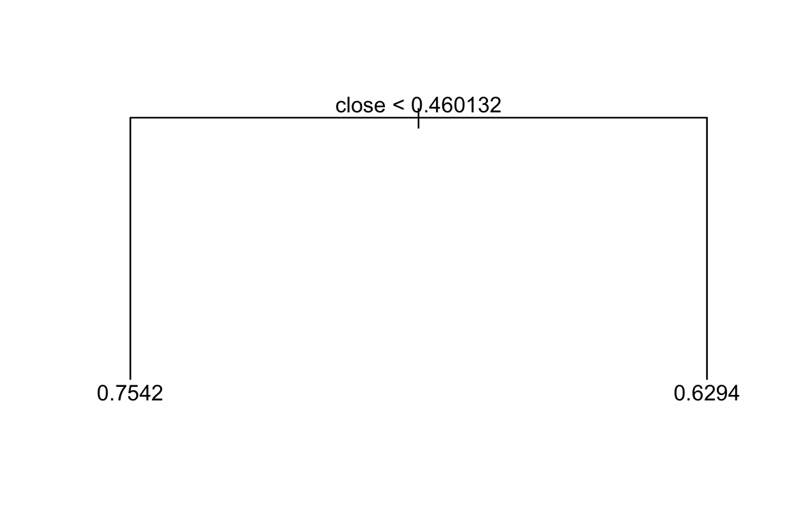
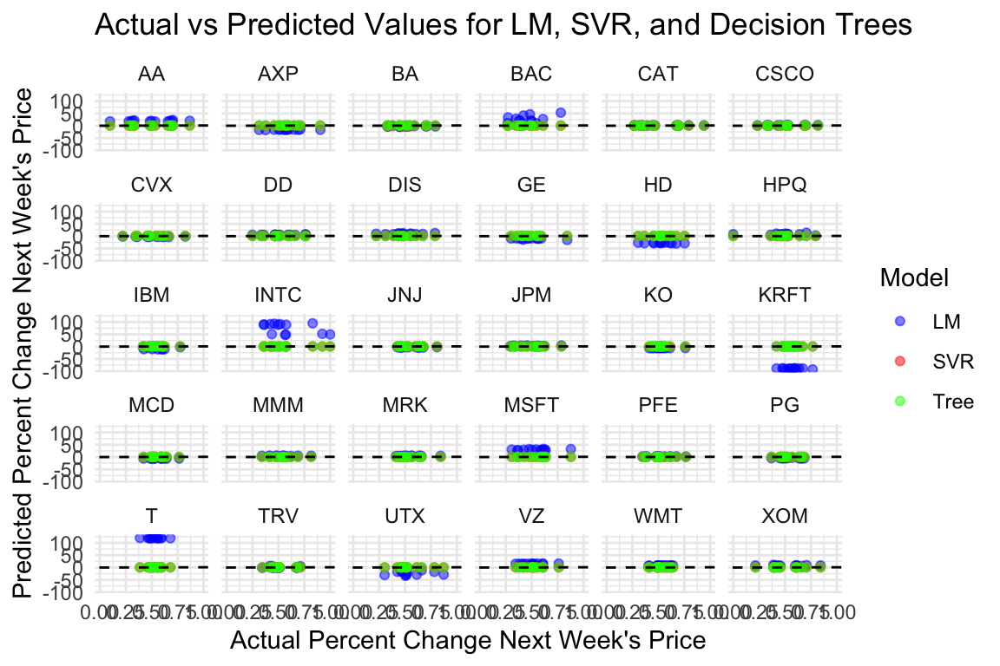
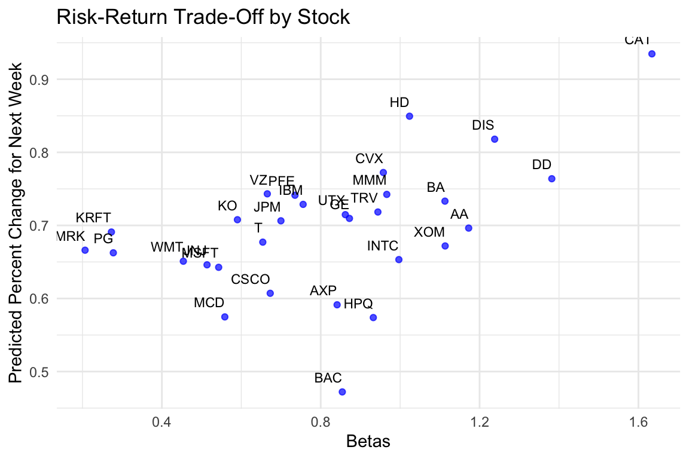
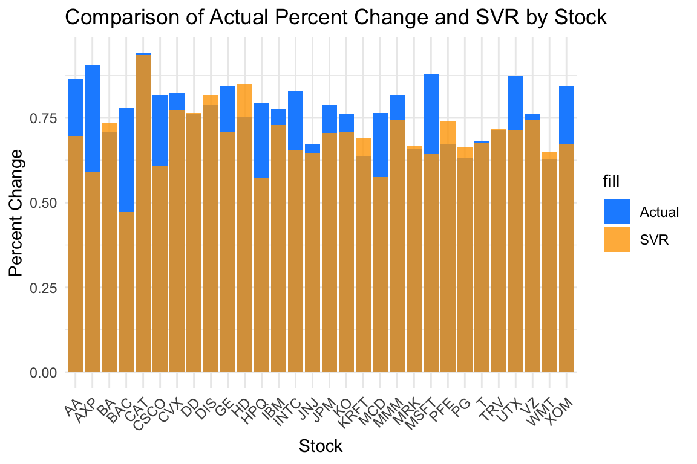

DA 6813 Case Study
1 Executive Summary
Content for Executive Summary goes here.
2 Problem Statement
The Dow Jones Index case study addresses a critical business challenge: predicting weekly stock performance to optimize investment strategies. In a highly volatile market, businesses and investors rely on accurate forecasts to maximize returns and mitigate risks. This study aims to develop predictive models that forecast the percentage change in stock prices for the following week, helping identify stocks with the highest growth potential. Using historical data, including stock prices, trading volumes, and financial indicators, the analysis seeks to improve decision-making by leveraging models such as Linear Regression, Decision Trees, and Support Vector Regression. These models will be evaluated for their accuracy and ability to assess risk using methods like the Capital Asset Pricing Model (CAPM). Addressing this problem will enable businesses to allocate resources more effectively, capitalize on profitable opportunities, and enhance their competitive edge in the financial market. Notably, the study will also examine broader market risks, such as the unusual losses experienced by all Dow Jones stocks in the week ending May 27, 2011, providing a comprehensive view of potential challenges.
Content for Problem Statement goes here.
3 Additional Sources
Support Vector Machines (SVMs) have been extensively applied in financial markets for stock price prediction due to their ability to handle complex, non-linear relationships. For instance, a study by Kim (2003) demonstrated that SVMs could outperform traditional models in forecasting stock price indices, highlighting their robustness in capturing market dynamics.
The Capital Asset Pricing Model (CAPM) is a fundamental tool in finance for assessing the risk and expected return of an investment. It establishes a linear relationship between the expected return of an asset and its systematic risk, measured by beta. This model aids investors in determining whether a stock is fairly priced relative to its risk. For a comprehensive understanding of CAPM, Investopedia provides an in-depth explanation of its components and applications.
Integrating SVMs for stock price prediction with CAPM for risk assessment can offer a holistic approach to investment decision-making, combining advanced predictive analytics with established financial theories.
Kim, K. (2003).
A study on the application of Support Vector Machines (SVM) for stock price index prediction.
https://www.researchgate.net/publication/220379019Wall Street Prep - Capital Asset Pricing Model (CAPM).
Comprehensive guide on using CAPM for risk assessment in financial markets.
https://www.wallstreetprep.com/knowledge/capm-capital-asset-pricing-modelInvestopedia - Capital Asset Pricing Model (CAPM).
In-depth explanation of CAPM, its components, and applications.
https://www.investopedia.com/terms/c/capm.asp
4 Methodology
To predict weekly stock price changes (percent_change_next_weeks_price), we employed three models: Linear Regression (LM), Decision Trees (DT), and Support Vector Regression (SVR). Before modeling, we undertook comprehensive data preprocessing. Missing values in key variables were addressed using KNN imputation to preserve patterns in the data. We scaled and normalized numeric variables to ensure comparability, especially crucial for SVR, which relies on distance measures in feature space. Additionally, we created lagged variables to capture potential temporal dependencies. However, after evaluating residual plots, we found no significant relationship between the lagged variables and the target, leading to their exclusion from the final models. The data was then split into training (Q1) and testing (Q2) sets, maintaining temporal integrity to simulate real-world forecasting.
Each model comes with its own assumptions. Linear Regression assumes a linear relationship between predictors and the target, independence of errors, homoscedasticity (constant error variance), and normal distribution of errors. It also requires minimal multicollinearity among predictors. Decision Trees, on the other hand, are non-parametric and assume no specific relationship between predictors and the target but can be sensitive to small changes in data. SVR, which ultimately performed best, assumes no specific relationship but depends heavily on normalized data to maximize the margin around the true values. SVR’s ability to model non-linear patterns allowed it to achieve the lowest Mean Absolute Percentage Error (MAPE) and Root Mean Square Error (RMSE), making it the most reliable predictor of weekly stock changes. Future work could explore ensemble methods or additional financial indicators to further enhance predictive accuracy.
5 Data
The dataset for this analysis consists of weekly stock performance metrics from the Dow Jones Index, containing variables such as opening, closing, high, and low prices, trading volumes, and percentage changes in prices. We began by importing and inspecting the dataset to understand its structure and identify missing values. Missing data, particularly in key numeric variables like percent_change_volume_over_last_wk and previous_weeks_volume, was imputed using KNN imputation to maintain data integrity. Numeric features were normalized and scaled to ensure they were on a comparable scale, which is critical for models like SVR that rely on distance calculations. Additionally, we explored the distributions and correlations of the numeric variables to identify potential predictors. Although we initially created lagged variables to capture temporal relationships, residual plots showed no significant correlation with the target variable (percent_change_next_weeks_price), leading to their exclusion. The dataset was then split into training (Q1) and testing (Q2) sets to facilitate model validation while preserving temporal order. This comprehensive preprocessing ensured a robust foundation for subsequent modeling efforts.
6 Findings
[1] "AA" "AXP" "BA" "BAC" "CAT" "CSCO" "CVX" "DD" "DIS" "GE"
[11] "HD" "HPQ" "IBM" "INTC" "JNJ" "JPM" "KRFT" "KO" "MCD" "MMM"
[21] "MRK" "MSFT" "PFE" "PG" "T" "TRV" "UTX" "VZ" "WMT" "XOM" [1] FALSE
[1] FALSE
[1] FALSE
[1] FALSE
[1] FALSE
[1] FALSE
[1] FALSE
[1] FALSE
[1] FALSE
[1] FALSE
[1] FALSE
[1] FALSE
[1] FALSE
[1] FALSE
[1] FALSE
[1] FALSE
[1] FALSE
[1] FALSE
[1] FALSE
[1] FALSE
[1] FALSE
[1] FALSE
[1] FALSE
[1] FALSE
[1] FALSE
[1] FALSE
[1] FALSE
[1] FALSE
[1] FALSE
[1] FALSE
Regression tree:
tree(formula = tree_formula, data = stock_data)
Variables actually used in tree construction:
[1] "close"
Number of terminal nodes: 2
Residual mean deviance: 0.007199 = 0.07199 / 10
Distribution of residuals:
Min. 1st Qu. Median Mean 3rd Qu. Max.
-0.148200 -0.033220 0.007472 0.000000 0.061980 0.097500 
# A tibble: 390 × 6
date stock percent_change_next_weeks…¹ svr lm_pred tree_pred
<dttm> <chr> <dbl> <dbl> <dbl> <dbl>
1 2011-04-01 00:00:00 AA 0.656 0.589 17.8 0.754
2 2011-04-08 00:00:00 AA 0.0967 0.611 17.7 0.754
3 2011-04-15 00:00:00 AA 0.698 0.562 19.5 0.754
4 2011-04-21 00:00:00 AA 0.532 0.633 17.3 0.754
5 2011-04-29 00:00:00 AA 0.481 0.585 18.3 0.754
6 2011-05-06 00:00:00 AA 0.498 0.593 19.0 0.754
7 2011-05-13 00:00:00 AA 0.302 0.621 18.0 0.754
8 2011-05-20 00:00:00 AA 0.675 0.567 19.7 0.754
9 2011-05-27 00:00:00 AA 0.278 0.623 18.0 0.754
10 2011-06-03 00:00:00 AA 0.318 0.567 20.2 0.754
# ℹ 380 more rows
# ℹ abbreviated name: ¹percent_change_next_weeks_price# A tibble: 30 × 4
stock RMSE_LM RMSE_SVR RMSE_Tree
<chr> <dbl> <dbl> <dbl>
1 AA 18.8 0.234 0.335
2 AXP 16.8 0.167 0.234
3 BA 3.21 0.250 0.274
4 BAC 29.2 0.157 0.330
5 CAT 0.650 0.415 0.244
6 CSCO 1.37 0.208 0.305
7 CVX 2.91 0.300 0.192
8 DD 5.07 0.222 0.279
9 DIS 9.40 0.305 0.299
10 GE 11.0 0.248 0.294
# ℹ 20 more rows
stock betas
1 AA 1.1725304
2 AXP 0.8412370
3 BA 1.1128029
4 BAC 0.8543340
5 CAT 1.6339876
6 CSCO 0.6728097
7 CVX 0.9576598
8 DD 1.3818514
9 DIS 1.2379936
10 GE 0.8723050
11 HD 1.0236042
12 HPQ 0.9324046
13 IBM 0.7556635
14 INTC 0.9967677
15 JNJ 0.5137296
16 JPM 0.6997650
17 KRFT 0.2728910
18 KO 0.5902203
19 MCD 0.5584826
20 MMM 0.9663208
21 MRK 0.2065984
22 MSFT 0.5429847
23 PFE 0.7351774
24 PG 0.2777192
25 T 0.6540860
26 TRV 0.9439450
27 UTX 0.8619338
28 VZ 0.6654782
29 WMT 0.4540274
30 XOM 1.1133388

7 Conclusion
Content for Conclusion goes here.
8 Appendix
Content for Appendix goes here.